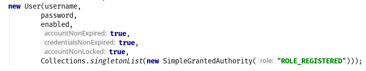

Łukasz Jędrzejewski
Wydana 15 lutego 2016.
po javowemu
fun newOrNull(value: String?): Msisdn {
if (value != null) {
return Msisdn(value)
} else {
return null
}
}
z wyrażeniami
fun newOrNull(value: String?): Msisdn {
return if (value != null) {
Msisdn(value)
} else {
null
}
}
val a: String? = null
val b: String? = "b"
b.length // błąd kompilacji
b?.length // ok
val c: String = null // błąd kompilacji
fun add1(value: Int) = value + 1
add1(null) // błąd kompilacji
?:
val name = "Elvis"
val user: User? = userRepository.findByName(name)
val id: Long = user?.id ?: userRepository.newIdentity()
val id: Long = user?.id ?: throw UserNotFoundException()
val id: Long = user?.id ?: return log.warn("User: $name not found")
if (obj is String && obj.length > 0) {
print(obj.length)
}
data class Developer(val firstName: String,
val lastName: String,
val login: String)
@AllArgsConstructor
@Getter
@ToString
@EqualsAndHashCode
@Wither
public final class Developer {
private final String firstName;
private final String lastName;
private final String login;
}
data class Developer(val firstName: String,
val lastName: String,
val login: String)
niemutowalne (gdy nie używamy var) - modyfikacja przez copy
val ljd = developer.copy(login = "ljd")
destructuring bind
val (fn, ln) = developer
data class Developer(
val firstName: String,
val lastName: String,
val login: String = toukizedLogin(firstName, lastName))
Developer(firstName = "Łukasz", lastName = "Jędrzejewski")
Developer(firstName = "Jakub",
lastName = "Nowakowski",
login = "kn")
import org.springframework.security.core.userdetails.User
User(username = username,
password = password,
enabled = enabled,
accountNonExpired = true,
credentialsNonExpired = true,
accountNonLocked = true,
authorities = listOf(SimpleGrantedAuthority("ROLE_REGISTERED")))
Nie bardzo…

switch na sterydachEnum-iewhen (x) {
0, 1 -> print("x == 0 or x == 1")
in 3..5 -> print("3 <= x <= 5")
else -> print("otherwise")
}
fun Any?.toString(): String {
return if (this == null) "null" else toString()
}
ale…
public operator
fun <T> Collection<T>.plus(element: T): List<T> {
val result = ArrayList<T>(size + 1)
result.addAll(this)
result.add(element)
return result
}
| Java | Kotlin |
|---|---|
private |
private |
protected |
protected |
package |
- |
public |
public |
Nowy scope - internal
wyskakiwanie z lambd
list.map { value ->
repeat(10) {
val result = tryToDoSth(value)
if (result != null) {
return@map result
}
}
null
}
this
a w nim funkcje let, apply, with, run - głównie do pracy z nullami i setterami
@Bean
open fun accessTokenConverter(): JwtAccessTokenConverter {
return JwtAccessTokenConverter().apply {
setSigningKey("123")
}
}
userRepository.findByEmail(email)?.let {
doSthWithUser(it)
}
fun require(value: Boolean): Unit
fun require(value: Boolean, lazyMessage: () -> Any): Unit
fun <T:Any> requireNotNull(value: T?): T
fun <T:Any> requireNotNull(value: T?, lazyMessage: () -> Any): T
fun check(value: Boolean): Unit
fun check(value: Boolean, lazyMessage: () -> Any): Unit
fun <T:Any> checkNotNull(value: T?): T
fun <T:Any> checkNotNull(value: T?, lazyMessage: () -> Any): T
fun error(message: Any): Nothing
? extends i ? super - out i inpozwala na odwołanie się do klasy generycznego typu
verify(aMock).aMethod(any(AParam::class.java))
verify(aMock).aMethod(any())
inline fun <reified T : Any> any() = Mockito.any(T::class.java)
dziwna składnia adnotacji
@RequestMapping(method = arrayOf(RequestMethod.GET))
a zagnieżdżonych jeszcze bardziej
@ApiResponses(ApiResponse(code = 400, message = "Bad request"),
ApiResponse(code = 409, message = "Conflict"))
adnotacje na property - należy określić czy adnotacja ma dotyczyć pola, gettera, bądź settera
class Token(@get:JsonIgnore val value: String)
lazy, observablenull-em*Domyślnie klasy i metody posiadają modyfikatory public i final
Właściwie dopóki Spring nie potrzebuje proxy (np. przez użycie @Transactional),
nie ma problemu. Wtedy musimy otworzyć klasę i metody poprzez open
Do kotlina 1.0.5 owszem
Od wersji 1.0.6 twórcy złamali swoje założenie i wydali plugin kotlin-allopen
kotlin-spring)no-arg, która dodaje bezargumentowy konstruktorTrochę upraszcza
@Service
class MyService(private val otherService: OtherService) {
...
}
zamiast
@Service
class MyService @Autowired constructor(
private val otherService: OtherService
) {
...
}
W kotlinie wygląda brzydko
@Configuration
@ConfigurationProperties("spring.social.google")
open class GoogleConfiguration {
var validity: Duration = Duration.ofDays(3)
var clientIds: MutableList<String> = mutableListOf()
}
Nie obędzie się bez dodatkowego modułu - jackson-module-kotlin
Radzi sobie klasami bez domyślnego konstruktora
@Autowired@RequestParam i @HeaderParam
RestTemplate wykorzysta reified…
restTemplate.exchange(... new ParameterizedTypeReference<List<Foo>>() { })
val result: List<Foo> = restTemplate.getForObject(url)
Struktura testów nie różni się znacząco od tych z Javy. Miłym dodatkiem jest jednak nazewnictwo
@Test
fun `should add numbers`() {
assertThat(1 + 1).isEqualTo(2)
}
Problem analogiczny jak przy Springu - trzeba otworzyć klasę, użyć pluginu
kotlin-allopen, bądź …
… otworzyć klasę tylko w teście
import de.jodamob.kotlin.testrunner.KotlinTestRunner
@RunWith(KotlinTestRunner::class)
class ATest {
}
Czyste sprawia problemy:
when jest słowem kluczowym
`when`(dev.firstName).thenReturn("name")
nullZ pomocą przychodzi nakładka mockito-kotlin
myService::aMethod, (aktualnie wspierane jest jedynie odniesienie do funkcji,
np. String::length)Jak oceniam Kotlina?
Przyjemniejsza Java, prostsza Scala